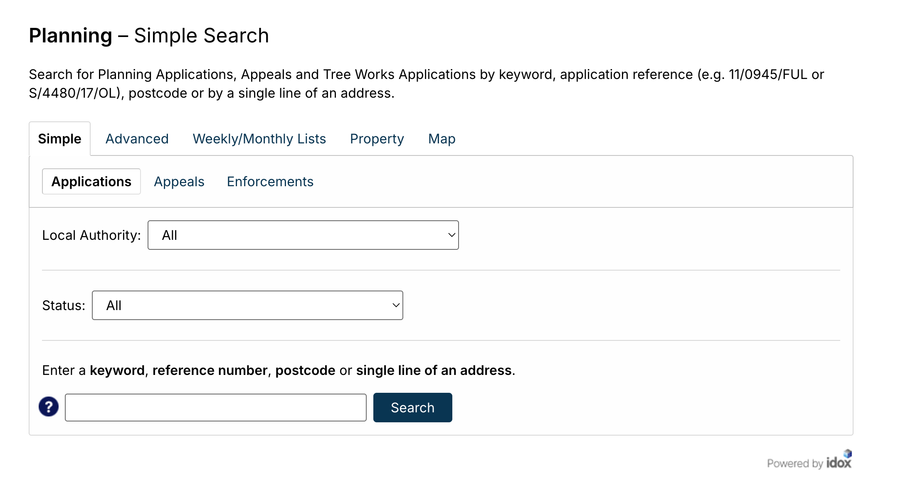
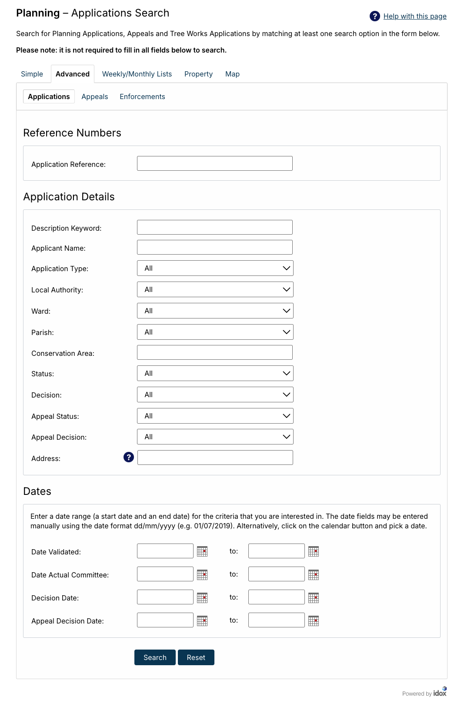
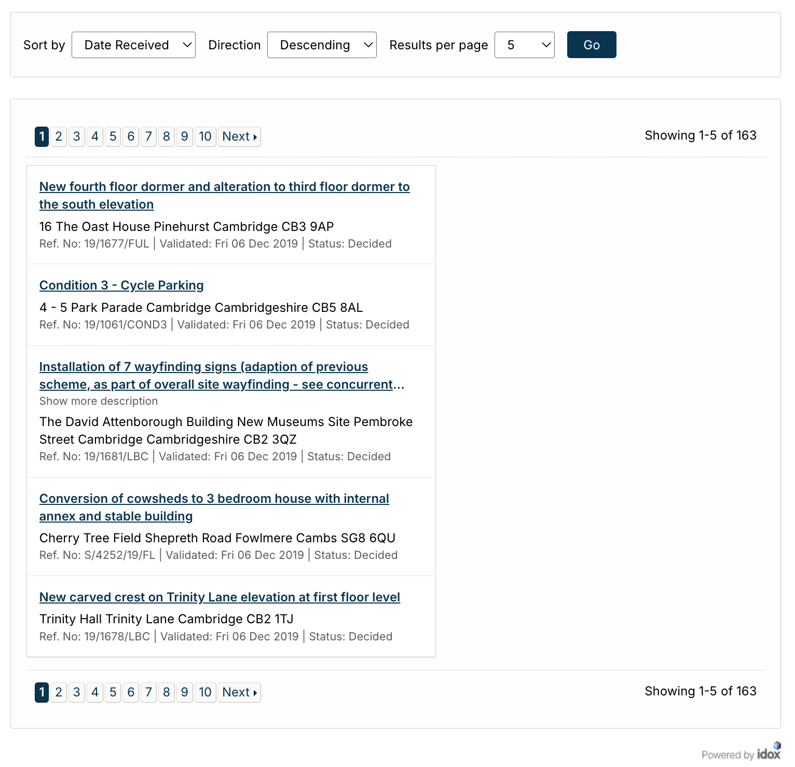
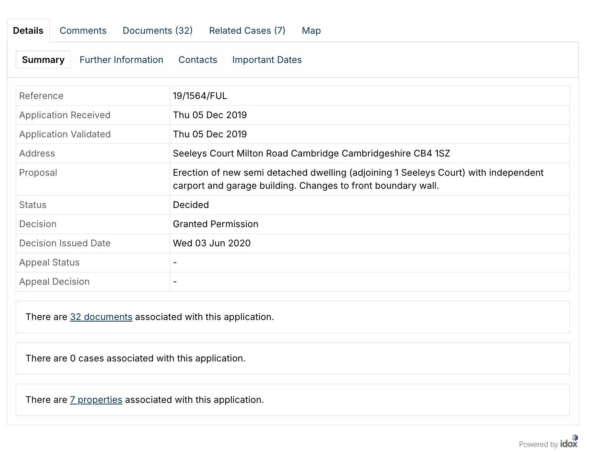
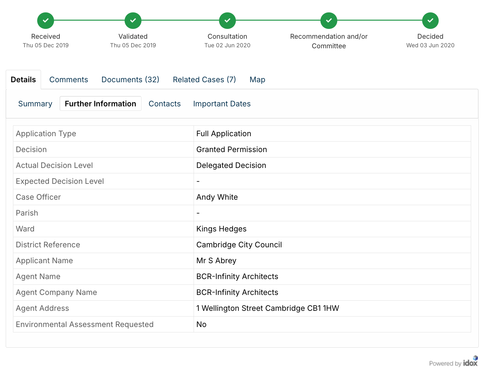
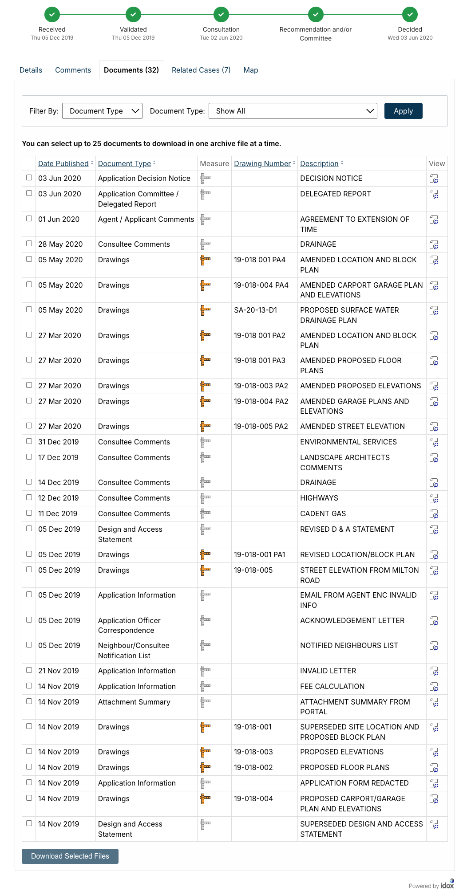
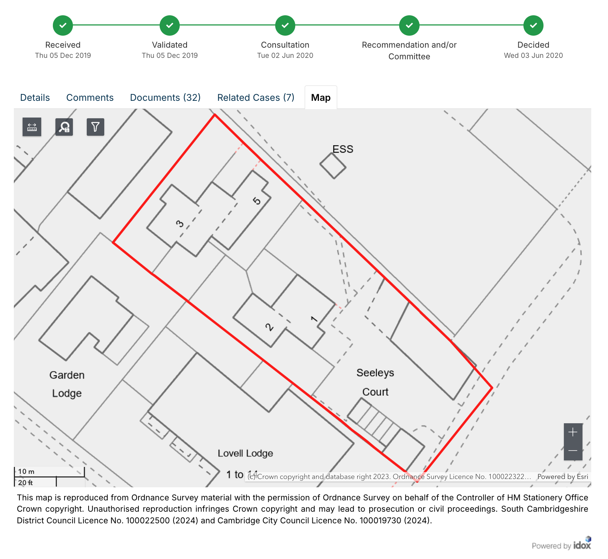

Idox
A Visual Walkthrough
Idox make the planning portal for software uses by most local planning authorities in the UK.
This is what the main search form of an Idox planning portal looks like:
The Main Form

The Advanced Search Form
If we click over to the "Advanced" tab, this is what we see:

The URL of the advanced search tab is, in the case of Cambridge:
https://applications.greatercambridgeplanning.org/online-applications/search.do?action=advanced
This is the scraper's start URL.
The Advanced Search Form's Results Page
If we leave the applications button selected, and enter a start and end value for the "Date Validated" field, we get a list of results that looks something like this:

An Application
If we click on one of those applications, (not on pictured in this case), we get taken to the application's "Details > Summary" tab:
The Details > Summary Tab
URL
https://applications.greatercambridgeplanning.org/online-applications/applicationDetails.do?activeTab=summary&keyVal=Q0YSEDDXIK800
Information
- Reference
- Application Received
- Application Validated
- Address
- Proposal
- Status
- Decision
- Decision Issued Date
- Appeal Status
- Appeal Decision
Image

The Details > Further Information Tab
URL
https://applications.greatercambridgeplanning.org/online-applications/applicationDetails.do?activeTab=details&keyVal=Q0YSEDDXIK800
Information
- Application Type
- Decision
- Expected Decision Level
- Case Officer
- Parish
- Ward
- District Reference
- Applicant Name
- Agent Name
- Agent Company Name
- Agent Address
- Environmental Assessment
Image

The Documents Tab
URL
https://applications.greatercambridgeplanning.org/online-applications/applicationDetails.do?activeTab=documents&keyVal=Q0YSEDDXIK800
Information
For each document, we get:
- Date Published
- Document Type
- Measure
- Drawing Number
- Description
Image

The Map Tab
URL
https://applications.greatercambridgeplanning.org/online-applications/applicationDetails.do?activeTab=map&keyVal=Q0YSEDDXIK800
Image
